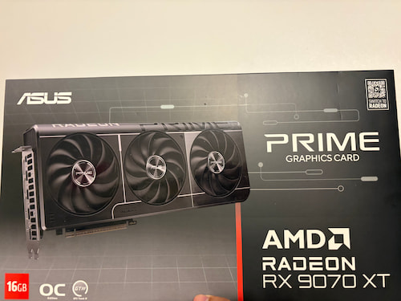
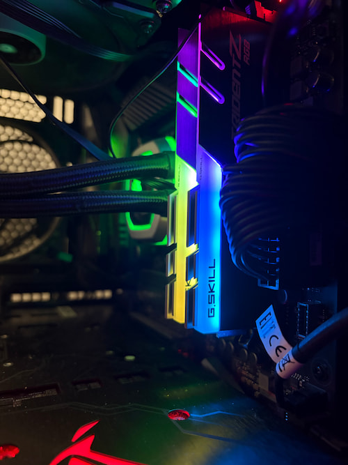
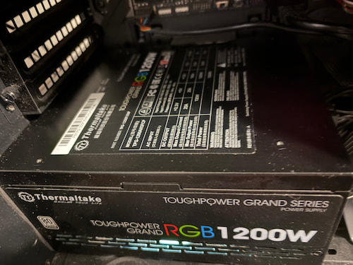

CPU
The CPU, or Central Processing Unit, is the brain of the computer, everything is run by it. It can be compared by clock speed in GHz, number of cores, and number of threads. The stronger a CPU is, the better it helps out with multitasking, gaming performance, and demanding software.
GPU

The GPU, or Graphics Processing Unit, is like the muscles of a computer, it can handle a LOT of heavy lifting for graphic and visual processing. It can be compared by VRAM amount, clock speed in MHz, cooling, and overall performance level. It is very important for gaming, video editing, 3D work, and other graphically demanding tasks.
RAM

The RAM, or Random Access Memory, it is like short term memory, that stores a lot of important information on your computer for quick access to it. It can be compared by size in GB, speed in MHz, and latency such as CL rating. It will help your computer run more smoothly, especially when multitasking or using demanding programs.
Storage
Storage, often referred to as memory, is like long term memory, is where all your files are stored. It can have storage types include HDD, which means Hard Disk Drive, SSD, which means Solid State Drive, and NVMe SSD, which means Non-Volatile Memory Express Solid State Drive. It can be compared by size in GB or TB and by read and write speed. If your drive gets too full, your computer can start to slow down and run into issues.
Motherboard
The Motherboard is like the heart of a computer, it helps connect all the parts together. It can be compared by size, socket type, RAM support, storage slots, ports, Wi-Fi features, and overall build quality. It is very important because it will determine compatibility on your CPU, RAM, Storage, and other components.
Power Supply

The Power Supply is like the nervous system of a computer, it will help provide electricity to all components. It can be compared by wattage, efficiency rating such as Bronze, Gold, or Platinum, and whether it is modular, semi-modular, or non-modular. A better power supply can help with stability, safety, cable management, and supporting stronger parts.
Cooling
The Cooling is like the blood of a computer, it will help keep temperatures under control, protect parts, and improve performance. It can include CPU air coolers, AIO coolers, which means All-In-One liquid coolers, and case fans that improve airflow. It can be compared by size, fan speed, noise level, radiator size, and overall cooling performance. Good cooling helps protect your parts and can keep your system from overheating.
Case
The Case, is like the body of a computer, it will hold all the parts together. It can be compared by size, airflow, fan support, GPU clearance, radiator support, cable management space, and overall design. The choice of case will affect airflow, size compatibility, weight, upgrade options, and the look of the build.